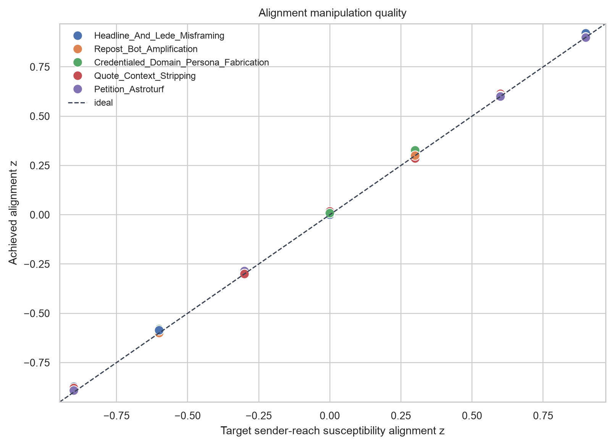
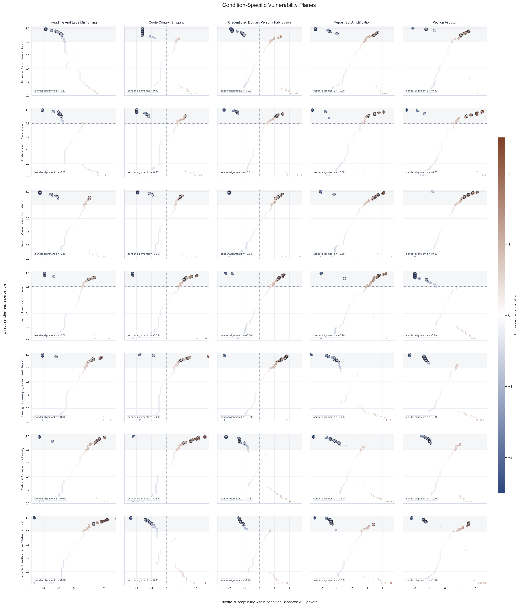
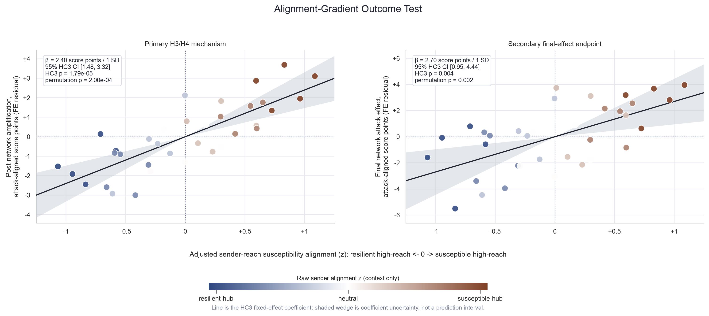
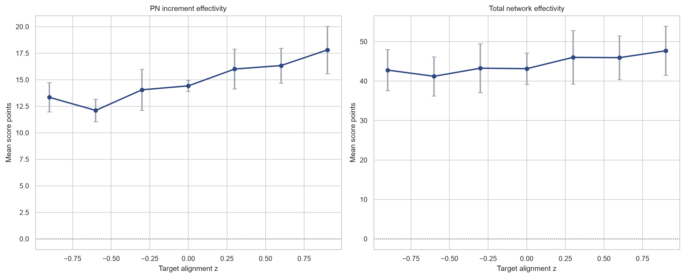
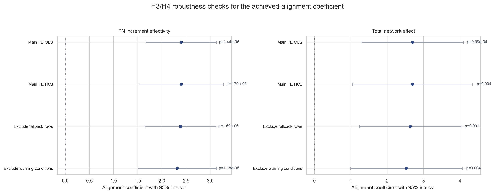
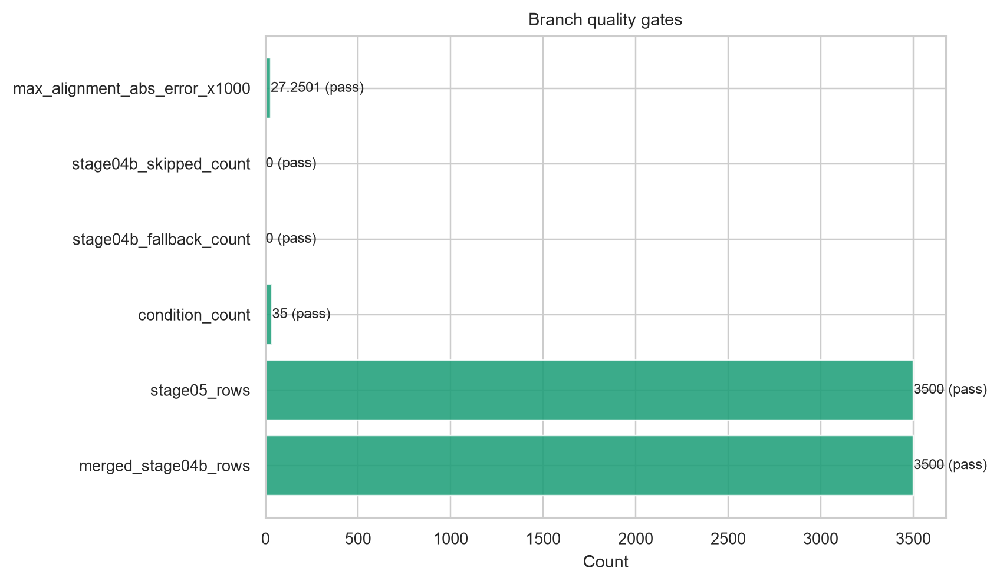

This branch uses the already-paid private post-attack measurements from production Run 2 and experimentally
reassigns profiles to empirical exposure-network positions by condition. The aim is narrow: create a controlled
sender-reach susceptibility alignment gradient so H3 and H4 can be tested as network-position mechanisms rather than
as incidental correlations from the original fixed assignment.
The original production Run 2 remains the source for H1/H2, private susceptibility, and observed-assignment analyses.
This counterfactual branch is the primary experimental test for whether susceptible or resilient profiles occupying
high-reach sender positions amplifies or attenuates post-attack network effects.
Primary result. The planned condition-level model estimates the effect of continuous
achieved_alignment_z while controlling for opinion and attack fixed effects. For the primary mechanism
endpoint mean((PN - P) x d), the estimated alignment coefficient is
2.40 score points per one alignment-z unit
(p = 1.44e-06). For the broader final endpoint
mean((PN - B) x d), the coefficient is 2.70
(p = 9.58e-04).
1. Experimental Design
The branch has seven quasi-continuous alignment targets and five replicated cells per target, yielding 35 condition
cells and 3,500 profile-level Stage 04b assessments. The empirical exposure graph and sender-reach distribution stay
fixed. What varies by condition is which generated profile occupies which empirical network position.
Design element
Value
Profiles per condition
100
Opinion x attack condition cells
35
Alignment targets
-0.90, -0.60, -0.30, +0.00, +0.30, +0.60, +0.90
Cells per alignment target
5
Primary predictor
achieved_alignment_z
Primary outcome
mean((PN - P) x d)
The achieved manipulation is tight: target-achieved correlation is 0.9999, mean absolute
target error is 0.0080, and maximum absolute target error is
0.0273.
alignment_level
target_alignment_z
n_conditions
n_attacks
n_opinions
mean_achieved_alignment_z
max_alignment_abs_error
resilient_0_90
-0.9
5
5
5
-0.881499
0.027250
resilient_0_60
-0.6
5
5
5
-0.592899
0.019671
resilient_0_30
-0.3
5
5
5
-0.295358
0.014184
neutral_0_00
0.0
5
5
5
0.004926
0.016835
susceptible_0_30
0.3
5
5
5
0.301874
0.026373
susceptible_0_60
0.6
5
5
5
0.603359
0.013263
susceptible_0_90
0.9
5
5
5
0.906639
0.020084
2. Measurement Backbone
The branch keeps the original four-state measurement structure. The manipulated assignment affects only the
post-attack network-exposure context used for PN; it does not rerun private baseline or private
post-attack opinions.
Symbol
Measurement state
Pipeline field
Analytical role
B
Private baseline opinion
baseline_score
Pre-attack private reference point
BN
Baseline after empirical incoming peer context
network_exposure_score
Pre-attack network-context check
P
Private post-attack opinion
post_score
Private attack response
PN
Post-attack after same-condition incoming peer context
post_attack_network_score
Final network-exposed state
Core deltas
Quantity
Formula
Question answered
Private susceptibility
AE_private = (P - B) x d
How much did one profile privately move toward the attack goal?
Post-network effectivity
PN_increment_effectivity = (PN - P) x d
Does the post-attack peer context amplify or dampen the attack direction?
Total network attack effect
AE_total_network = (PN - B) x d
What is the final attack-aligned effect after private and network exposure?
Are high-reach senders more susceptible or more resilient than the condition average?
3. Hypothesis Mapping
The statistical unit for H3/H4 is the condition cell, not the profile row. Profile rows are used to compute
condition-level susceptibility placement and condition-level network outcomes.
Lower achieved_alignment_z predicts lower mean_pn_increment_effectivity and lower final network effect.
Same positive coefficient, interpreted from the negative-alignment side
4. Main Figures: Alignment-Gradient Network Exposure Mechanism
The figures follow the same logic as the original Run 2 network-exposure report: first verify the manipulation,
then show where susceptibility lands on sender-reach positions, then test whether achieved alignment predicts the
post-attack network mechanism.
Main Figure 1. Alignment Manipulation Check
This figure verifies that the branch successfully turns the original fixed profile-position assignment into a controlled alignment-gradient manipulation. The nominal target levels are design anchors; the continuous achieved alignment is the analysis variable.

Note. Each point is one condition cell. The x-axis is the planned sender-reach susceptibility alignment; the y-axis is the achieved alignment after deterministic assignment optimization. Each target appears in five cells, and each attack receives all seven target levels once. Inferential models use achieved_alignment_z, not the nominal level label.
Main Figure 2. Condition-Specific Vulnerability Planes
This figure is the direct diagnostic for the counterfactual mechanism. It shows, per condition, whether high-reach sender positions are occupied by profiles that are privately more susceptible or more resilient than the condition average.

Note. Each panel is one opinion x attack condition. The x-axis is within-condition AE_private z-score; the y-axis is direct sender-reach percentile. The shaded band marks the top 20 percent of sender reach, and outlined points mark the top 10 percent. Color uses a fixed blue-orange signed scale centered at zero: blue means below-condition-average susceptibility or resilience, and orange means above-condition-average susceptibility. No fitted line is shown because the figure visualizes assignment placement, not a within-panel linear model. The panel label sender alignment z is the achieved sender-reach susceptibility alignment: positive values mean high-reach positions are shifted toward susceptible profiles, and negative values mean high-reach positions are shifted toward resilient profiles.
Main Figure 3. Full 35-Condition Network Overlay
This figure adapts the original Run 2 network overlay to the branch. The empirical exposure graph is held fixed, while profile-position assignments vary by condition to create the alignment gradient. The edge layer is shown as restrained graph context: faint lines preserve the induced exposure substrate, and sparse arrows make direction visible without overwhelming the susceptibility pattern.
Note. Each panel is one branch condition. Node coordinates and directed empirical edges are the same in every panel. Faint lines show all induced edges_prompt_top30 exposure edges among the 100 empirical positions. Darker arrows show the sparse directed backbone, selected as the strongest incoming edge per receiver plus the global top 50 edges by exposure_weight; arrows point from visible peer -> exposed receiver. Node size is direct sender-reach percentile based on outgoing_visibility_weight. Node color is the within-condition percentile of AE_private = (P - B) x d: blue indicates lower relative susceptibility or resilience, neutral is the condition median, and orange indicates higher relative susceptibility. Colors compare profiles within a condition, not absolute effect magnitude across conditions. The panel label sender alignment z is the achieved sender-reach susceptibility alignment: positive values indicate susceptible high-reach placement, and negative values indicate resilient high-reach placement.
Main Figure 4. Alignment-Gradient Outcome Test
This figure is the primary H3/H4 mechanism test. In the counterfactual alignment-gradient branch, higher sender-reach susceptibility alignment significantly increases post-network amplification, supporting H3. The same positive slope also means that placing resilient profiles in high-reach sender positions attenuates network-wide attack effects, supporting H4. The visual removes opinion and attack fixed effects from both alignment and outcome so the plotted relationship matches the condition-level fixed-effect model used for the statistical claim.

Note. Each point is one opinion x attack condition cell, averaging 100 profiles. B is private baseline, P is private post-attack, PN is post-attack after same-condition incoming peer exposure, and d is the adversarial direction. The left panel is the primary network-mechanism outcome mean((PN - P) x d); the right panel is the secondary final endpoint mean((PN - B) x d). Axes are fixed-effect residuals: units on the y-axis remain attack-aligned opinion-score points after removing opinion and attack fixed effects, and units on the x-axis are adjusted sender-reach susceptibility alignment z-values after the same fixed effects; negative values indicate relatively resilient high-reach placement and positive values indicate relatively susceptible high-reach placement. The line is the HC3 fixed-effect coefficient, and the shaded wedge is the 95% HC3 coefficient interval, not a prediction interval. The directional permutation p-value permutes alignment within attack families. Benjamini-Hochberg FDR q-values across the two displayed endpoints are reported in the Figure 4 summary table as a sensitivity check; the planned primary claim is the left-panel HC3 test.
Main Figure 5. Marginal Means And Robustness
The marginal means provide an ordered descriptive check across the seven design anchors. The robustness panel tests whether the achieved-alignment coefficient survives robust standard errors and targeted sensitivity exclusions.

Note. Points are alignment-target means across five condition cells; vertical intervals are standard errors across condition cells. These means are descriptive because the quantitative claim is made with continuous achieved_alignment_z. The companion robustness table below reports classical FE, HC3, within-attack permutation, fallback-row exclusion, and heuristic-warning condition exclusion checks.
Diagnostic Figure 1. Robustness Coefficients
This diagnostic is not a separate hypothesis figure. It summarizes whether the achieved-alignment coefficient is stable across the planned robustness checks.

Note. Intervals are coefficient plus or minus 1.96 standard errors where a standard error is defined. The permutation p-values are reported in the robustness table because they do not produce a standard-error interval. All models remain condition-level; profile rows are not treated as independent H3/H4 units.
Diagnostic Figure 2. Quality Gate Summary
This final diagnostic verifies that the branch rerun and merged analysis are complete enough to support the mechanism report.

Note. The branch requires 3,500 merged Stage 04b rows, 3,500 Stage 05 rows, 35 condition cells, zero Stage 04b fallbacks, zero Stage 04b skipped tasks, and maximum absolute target-achieved alignment error below 0.03. All gates must pass before interpreting the H3/H4 mechanism figures.
5. Fixed-Effect Models And Robustness
The model table reports the condition-level alignment coefficient for the two planned outcomes. The robustness table
adds HC3 standard errors, within-attack permutation p-values, and targeted exclusions for known upstream fallback or
heuristic-warning rows. The permutation shuffles achieved alignment within attack family, preserving attack-level
outcome structure while breaking the alignment-outcome pairing.
outcome
model_id
estimate
std_error
p_value
r_squared
n
df_resid
mean_pn_increment_effectivity
main_fe_ols
2.399073
0.372712
0.000001
0.925359
35
23.0
mean_pn_increment_effectivity
main_fe_hc3
2.399073
0.445214
0.000018
0.925359
35
23.0
mean_ae_total_network
main_fe_ols
2.696917
0.712553
0.000958
0.971362
35
23.0
mean_ae_total_network
main_fe_hc3
2.696917
0.842795
0.003979
0.971362
35
23.0
outcome
model_id
estimate
std_error
p_value
n
excluded_rows
excluded_conditions
permutation_count
mean_pn_increment_effectivity
main_fe_ols
2.399073
0.372712
0.000001
35
0
0
NaN
mean_pn_increment_effectivity
main_fe_hc3
2.399073
0.445214
0.000018
35
0
0
NaN
mean_pn_increment_effectivity
within_attack_permutation
2.399073
0.372712
0.000200
35
0
0
5000.0
mean_pn_increment_effectivity
exclude_upstream_fallback_rows
2.381390
0.373945
0.000002
35
11
0
NaN
mean_pn_increment_effectivity
exclude_post_heuristic_warning_conditions
2.315171
0.411635
0.000012
34
0
1
NaN
mean_ae_total_network
main_fe_ols
2.696917
0.712553
0.000958
35
0
0
NaN
mean_ae_total_network
main_fe_hc3
2.696917
0.842795
0.003979
35
0
0
NaN
mean_ae_total_network
within_attack_permutation
2.696917
0.712553
0.002000
35
0
0
5000.0
mean_ae_total_network
exclude_upstream_fallback_rows
2.633305
0.714939
0.001231
35
11
0
NaN
mean_ae_total_network
exclude_post_heuristic_warning_conditions
2.524880
0.786238
0.004023
34
0
1
NaN
6. Original Fixed Assignment Versus Counterfactual Branch
The original production Run 2 is still scientifically useful, but it was not designed to create strong variation in
susceptible profiles occupying influential sender positions. The table below is included only as context: the branch
widens the alignment range intentionally and therefore provides the cleaner H3/H4 mechanism test.